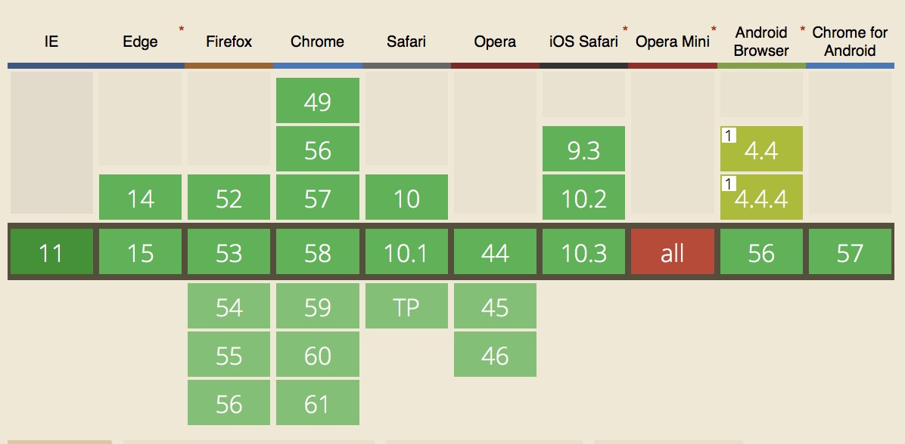

话说我敲css的时候动不动就回车出来个calc()，因为没有用过也不知道到底怎么来使用，偶然一天刷微博的时候发现了篇文章，拯救了我的css盲区。(╭￣3￣)╭♡
css3的calc()函数允许我们在属性值中执行数学计算操作。例如我们可以使用calc()指定一个元素宽的固定像素值为多个数值的和。
1 | .foo { |
❤那为什么是 calc()嘞？
如果你使用过 CSS 预处理器，比如 SASS，就会认识下面这个👇
1 | .foo { |
然而，calc()函数提供了更好的解决方案。首先，我们能够组合不同的单元。特别是，我们可以混合计算绝对单元（比如百分比与视口单元）与相对单元（比如像素）。例如，我们可以创造一个表达式，用一个百分比减掉一个像素值。
1 | .foo { |
本例中，.foo元素总是小于它父元素宽度 50px。
第二，使用calc()，计算值是表达式它自己，而非表达式的结果。当使用 CSS 预处理器做数学运算时，给定值为表达式的结果。
1 | /*Value specified in SCSS*/ |
然而，浏览器解析的calc()的值为真实的calc()表达式。
1 | /*Value specified in CSS*/ |
这意味着浏览器中的值可以更加灵活，能够响应视口的改变。我们能够给元素设定一个高度为视口的高度减去一个绝对值，它将随视口的改变进行调节。
❤使用 calc()
calc() 函数可以用来对数值属性执行四则运算。比如这样，还有这样👀
1 | .foo { |
❤clac() 嵌套
calc() 函数可以嵌套。在函数里边，会被视为简单的括号表达式，比如这样👀
1 | .foo { |
clac() 已经得到普遍支持。戳这里看calc()目前支持情况

对于不支持calc()的浏览器，整个属性值表达式将被忽略。不过我们可以对那些不支持calc()的浏览器，使用一个固定值作为回退。
1 | .foo { |
❤什么场景可以使用 calc()
居中元素
使用
calc()给我们提供另一个垂直居中元素的解决方案。如果我们知道元素的尺寸，一个典型的解决方案是使用负外边距移动自身距离高与宽的一半，如下所示：1
2
3
4
5
6
7
8
9
10
11
12
13
14
15
16/*Assuming .foo is 300px height and 300px width*/
.foo {
position: absolute
top: 50%;
left: 50%;
marging-top: -150px;
margin-left: -150px;
}
/*使用 calc() 函数，我们仅仅通过 top 与 left 属性便能实现相同的效果：*/
.foo {
position: absolute
top: calc(50% - 150px);
left: calc(50% - 150px);
}不过由于 Flexbox 的介入，已经很少需要这种方法了。不过，一些情况下 Flexbox 不能被使用。比如，元素需要绝对定位或者固定定位，这种方法是有用的。
创建根栅格尺寸
使用
rem，calc()函数能够用来创建一个基于视口的栅格。我们可以设置根元素的字体大小为视口宽度的一部分。1
2
3html {
font-size: calc(100vw / 30);
}现在，
1rem为视口宽度的1/30。在页面上的任何文本，将会根据你的视口自动缩放。更进一步，相同比例的视口总会显示相同的文本数量，不管视口的真实尺寸是多少。
如果我们对非文本使用
rem设置大小，它们同样遵守这个行为。一个1rem宽度的元素总是视口元素宽度的 1/30。这个缩放实现起来很适合移动端的适配。清晰
最后，
calc()使计算更加清晰。如果你使一组项目为它们父元素容器宽度的 1/6，你可能值么写：1
2
3.foo {
width: 16.666666667%;
}然而，它能够更加清晰并具有可读性：
1
2
3.foo {
width: calc(100% / 6);
}
❤总结
总之calc()基本就是实现了对于运算的宽度高度的绝大部分需求，耶✌️
(´・ω・`)不过话说回来，这么好用的特性我怎么才知道。。。。
还有什么问题大家一起分享嗷嗷~联系方式就藏在博客哪篇文章里(≧▽≦)/